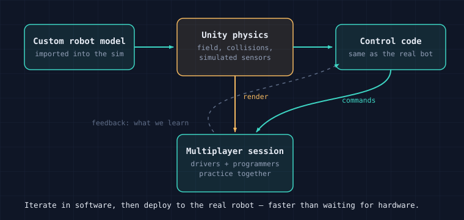
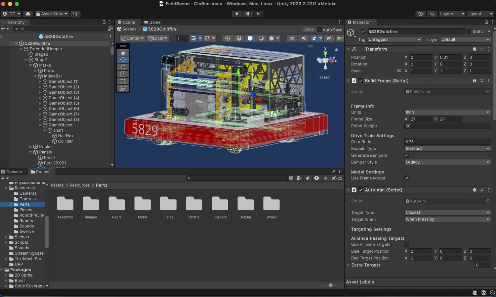
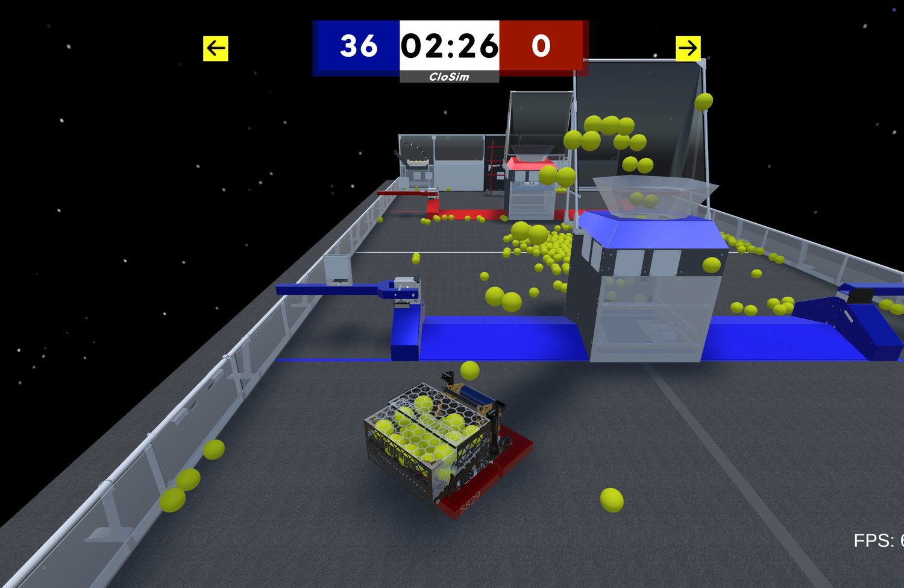

FRC Team 5829 · CloSim · Unity 2023.2.22f1
Unity Robotics Simulator
I brought our team's robot into CloSim, a Unity-based FRC simulator, so we can rehearse autonomous routines and strategy before the real robot exists and stop competing for time on one physical bot.
Why it exists
On an FRC team, the physical robot is the bottleneck. There is one of it, it is often half disassembled, and everyone — drivers, programmers, strategists — needs time on it. A simulator removes that bottleneck. If the field, the robot, and the controls live in software, people can practice and iterate in parallel, and a bad autonomous routine fails in the sim instead of breaking real hardware.

What I worked on
My focus was making the simulator match our real robot, so practice in the sim actually transfers to the field.

Robot-model import & build frame
I imported our robot (5829Goldfire) into the sim and configured its build frame — frame size, weight, gear ratio, and drivetrain — so its geometry and movement behave like the real thing. That makes driver muscle memory and autonomous tuning actually transfer to the physical bot.
Auto-aim & multiplayer testing
I worked with the auto-aim targeting inside the sim and explored a shared multiplayer session, so a driver and a programmer can be in the same simulated field at once — which is how real practice and strategy work actually happen, together rather than in isolation.
Want to make this even stronger? If you tell me exactly which parts you wrote versus configured — for example whether you authored the auto-aim or build-frame scripts — I can phrase it precisely so it credits your work accurately.
See it run
